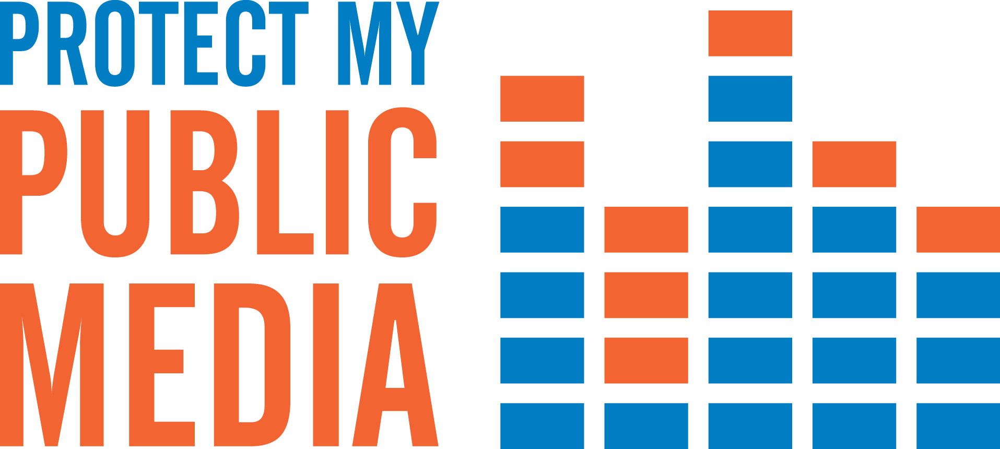
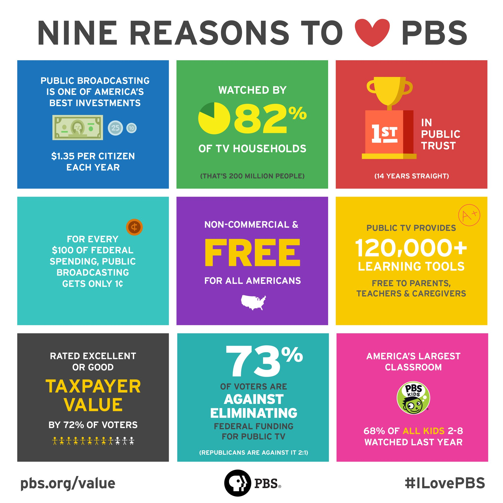

-
Petition
Sign the petition at Protect My Public Media
This petition urges Congress to continue the essential funding for public media and your local stations.
 -
Contact
Contact your legislators
Let them know you can’t imagine a world without public television and KLRU!
Contact Your Representative
Find out who your House Representative is by visiting www.govtrack.us.
Here's an example of what you can say:
• Identify yourself as a constituent, which town/city and state.
• Thank the member for his/her service to your community/state.
• State the purpose of the call: “I am concerned about the threat to federal funding for public television. Please make sure funding for public television continues.”
• Tell them why public television is important to YOU.
• “Public television is an important investment in our future.”
• “Thank you for your time.”
Share
Share the 9 Reasons to Love PBS Graphic
Tell us what KLRU means to you! Use the hashtags #yourKLRU and #ILovePBS
Share your story directly with KLRU at What's #YourKLRU
Support
Support KLRU by becoming a member.
PBS serves all Americans with content and services that educate, inform, and inspire. Find out what PBS means to viewers and about its role as a public service.
To learn more about what the Corporation for Public Broadcasting does, visit the CPB FAQ.
{kind=link}